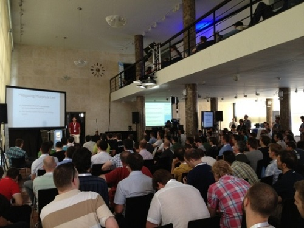

也紀念我們永遠的朋友 李士傑先生（Shih-Chieh Ilya Li）。
過來人談 Dropbox 的技術心得
◎本文原載 Linux Pilot，原文章連結按此。
Dropbox 現在在全球有超過 1 億 7500 萬用戶，成為一個幾乎無人不識的雲端企業。但最初 Dropbox 只是一個小型的 Startup，究竟它在技術上所作的部署如何令它成功？曾經是核心開發者之一 Rajiv Eranki，介紹他在 Dropbox 所學到的實戰經驗。

Rajiv Eranki 於 2008 年加入 Dropbox，在 2011 年離職，原因是「是時候去做一些更特別的事」。他在 2013 年 7 月 11 日舉辦的 RAMP 會議上，介紹在 Dropbox 時擔任伺服器技術人員的經歷。當年 Eranki 在大學畢業後加入了當時只有 2000 名用的 Dropbox，他和另外一人負責伺服器擴充部分。其時 Dropbox 的整個基建中只有兩台 Linux 伺服器，其中一台是資料庫專用機，另一是前端伺服器。
Eranki 表示 Dropbox 是一個具可塑性和擴充性的系統，縱使是擁有多個共享目錄的用戶，資料庫存取要求也只要陬出一次，在前端伺服器要查看的記錄檔也只有一個。由於資料庫並沒有分割，得以避開一些麻煩的作業。開發語言方面，Dropbox 選擇是了開源的 Python，好處是簡單但功能強大，當用戶數量達到 100 萬時，整個系統也只是用了数百行的程式碼。他表示如果要用 C 來編寫出同等功能，大概需要數千行的程式碼。此架設直到用戶達到 4000 萬人時仍然沒有改變，客戶端的 Dropbox 程式也是用 Python 編寫的。
Eranki 又表示，他們重視的是開發、管理和易於維護的平台，以及構造簡單的設計。他們亦放棄了能夠生成大量圖表的管理工具，改為製作一個簡單的控制界面，因為「大部分的圖表都沒有什麼用」。控制台會以直接顯示項目和其值。多出來的存取要求由 memcache 處理，延遲 SQL 要求的最佳化。隨著 Dropbox 的用戶越來越多，出現了一些將 Dropbox 用在其他非正規用途上的用戶，例如將 Dropbox 當作 CDN 使用等等。Eranki 表示開發團隊不應該被此等用戶所迷惑，要以一般正常用戶的需要進行改良，因為這些用戶才是 Dropbox 的根本。
他在 Dropbox 學到的另一個教訓，是「時刻追隨最新技術的人必敗」。靜觀其變再加以改良才是成功之道。他表示 Murphy's law 中「只要是有可能發生的問題，就一定會發生」，因此縱使使用的是比 Windows 更加可靠的 Linux 伺服器，也需要定期自行重新啟動，當然重啟次數會比 Windows 伺服器來得少。保存日誌檔非常重要，特別是對服務停止和性能劣化的記錄。對於沒有必要刪除的舊程式碼，就必須要保留。
最後他表示，對 Startup 來說要聘用新人越早越好。臨危受命的員工絕對不會有好表現，Startup 始終和一般的企業不同，員工需要多一點時間理解公司和系統。另外沒有人能在 Startup 建立初期正確的估計出架構的規模，因此使用成本較低而可塑性高的開源技術非常重要。
專欄總覽


E-Mail：contact@openfoundry.org Address：台北市南港區研究院路2段128號 中央研究院資訊科學研究所 . 隱私權條款. 使用條款